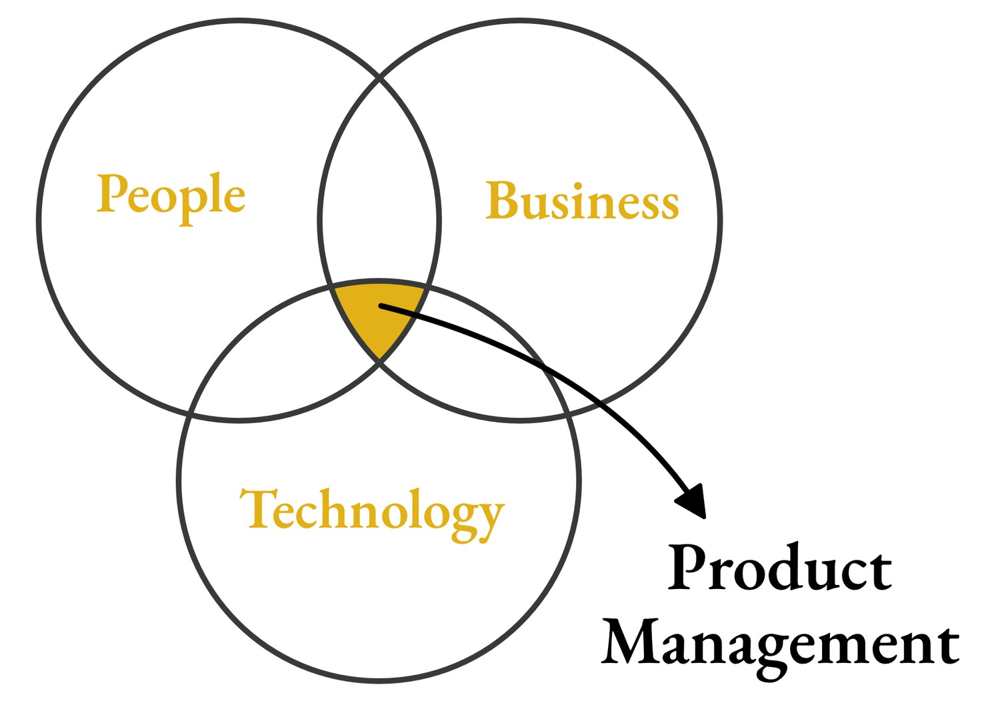

Professional

I think of a business as a human system before I think of it as an org chart or a roadmap. The people in that system have to be healthy and heard, or the output suffers no matter how good the strategy looks on paper. That's the lens I bring to product and engineering leadership: talk to the humans generating the qualitative signal, not just the dashboards generating the quantitative one, and treat leadership as a job that works for the people in it, not the other way around.
At Geospan, I stepped into leading an engineering department instead of a product one, while the company's product direction had stalled. Nobody outside my own team asked me to fix that, so I built a roadmap anyway: a now/next/later plan with a timeline and the value each piece would create. The product team adopted it. The 3D modeling tools it funded cut turnaround time 40% and raised model accuracy 30%, and it's part of why I was promoted twice in fourteen months.
At Beacon, I pushed for a data integration with a channel partner that the sales team wasn't fully sold on. They liked the white-label approach we'd used before, even though it caused problems downstream. I laid out how a direct integration would remove friction for the customer, and my skip-level manager backed the plan on the strength of that case. It did $1.5 million in orders in its first 30 days. Within six months, that channel was averaging $10 million a month, and it became the single biggest driver behind the company's first $100 million year in digital revenue.
I don't get every call right. I once hired a senior DevOps engineer into a role that was a stretch for him, betting he'd grow into it. Within a month it was clear he'd misrepresented his skills and was working against the culture I was building on the team, so I let him go and started over. Now I bring my tech lead into interviews with questions that can't be faked, get the team time with every candidate to judge character as much as skill, and decide up front whether a role is one someone can grow into or one that needs the experience on day one.
Some of my titles read engineering, but the work has always been product. Geospan hired me in part because their VP of Product didn't have real product experience and someone needed to fill that gap, and in part because, as the person who hired me put it, my people-leadership skills "emanate from your soul." Every other role on my resume besides the two engineering titles has been a product role. What the engineering titles add is systems fluency: the ability to sit in technical, business, and strategy conversations at the same time and make a call that works across all three.
I didn't start in an office. I drove a truck first, then went back to school as an adult and spent years in social services before I ever wrote a product spec. That's probably where the instinct to treat every system as a group of people first came from.
In their words
"What sets Colin apart is how he leads with clarity and respect. He doesn't just nod at your input, he actually wants your thoughts, sits with them, and makes decisions that are better because of it. Not decisions designed to look good in charts or slides, but decisions that are simply good for the people and the work."
"Colin embodies a rare combination of curiosity, initiative, and a genuine drive to improve the environment around him.
To illustrate Colin's approach, imagine this: you are walking along a well-trodden path, but there is an enormous shrub blocking the way. Everyone routinely walks around it, accepting the detour without question, a detour that adds five minutes to each journey. Most people never pause to consider why the shrub is there, or whether things could be different. Colin, however, is not most people. He is the person who stops, questions the status quo, and then proceeds to trim or remove the shrub so that no one ever has to walk around it again.
This analogy is much more than a metaphor, it is a reflection of Colin's working style. Whether faced with entrenched inefficiencies, legacy processes, or overlooked opportunities, Colin possesses the insight to identify what others miss and the determination to resolve those obstacles. His thoughtful questions often spark discussions that lead to meaningful change, and his practical action ensures those changes are realized for the benefit of everyone.
Colin's contributions consistently improve workflows, eliminate needless barriers, and foster a culture of innovation and proactive problem-solving."
Where I've worked
VP of Engineering, Geospan Corp.
Feb 2024 – Oct 2025 · Promoted twice in 14 monthsOwned the product and technical roadmap for a geospatial intelligence platform, directing 8 major initiatives in under a year while partnering directly with the C-suite. Championed and funded AI-assisted development with Cursor and CodeRabbit across 12 engineers, cutting bugs 15% and speeding up code review. Improved delivery speed 40% and built the engineering organization from 1 to 13.
Organization & PM Consultant, Midumo Advisory
Jan 2024 – Jun 2026Advised a forestry association on digital strategy, transformation, and roadmapping, ending in a digital app to manage its sustainable forestry program in partnership with the state DNR. Used generative AI tools, including Claude and ChatGPT, throughout the work.
Product Manager, Integrations, Beacon Building Products
Feb 2021 – Jun 2023Delivered an ML and OCR purchase-order processor that automatically turned customer PDF orders into digital ERP orders, handling 60,000+ purchase orders a day that previously needed manual processing. With 3 new partner integrations, improvements to 3 existing ones, and a DTC partnership integration, it contributed to 73% year-over-year channel revenue growth to $350M annually.
Product Manager, Keywords Studios (Microsoft contract)
Jun 2019 – May 2020Managed an executive proposal portfolio for master data management, coordinating governance, legal, design, and development stakeholders to evaluate initiatives and move selected work toward delivery.
Product Manager, Integrations, Apex Learning
Nov 2015 – Mar 2019Grew integration adoption from 12 to 65 school districts. Owned delivery of SSO, custom API, data, and batch-file integrations, including an automated batch-file processing integration built from customer interviews and product data.
Associate Product Coordinator, Onvia
Nov 2013 – Oct 2015Introduced a ticketing system that fed product analytics, led creation of a digital sales funnel that generated an average of 50 additional leads per month, and wrote and prioritized user stories from customer interviews.
Skills
Certifications
Product Management, Cornell University
Certified SAFe® 6 Product Owner/Product Manager, Scaled Agile, Inc.